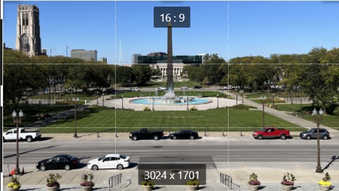

Composition
Basics of Composition
The main goal of composition is to create a good balance in your picture. This will draw the eye around the photo and to the spots you want them to look at. There are several rules and methods to achieve this. One thing to consider is your photo aspect ratio. The photos on this website have been edited to be in 16:9 for better styling but 3:2 and 4:3 are better options for photos.

Leading Lines
One method is to take lines in your photo and use it to create visual interest, or draw the eye certain directions. To the side is shown a picture which uses lines to draw the eye toward the center of the photo, and uses symmetry to create a pleasing arangment.
Rule of Thirds
This is the most commonly mentioned rule of composition. Essentially you want focal points to be on the lines that divide a photo into thirds. See inset image for a visual example of this. In the photo is displayed a grid. The lines in the photo also lie on or close to the grid. The street at the bottom and the lower third line are alighned and the obelisk lies in the center of the photo.
Rule of odds
Usually odd numbers of objects are more visually appealing in a photo.